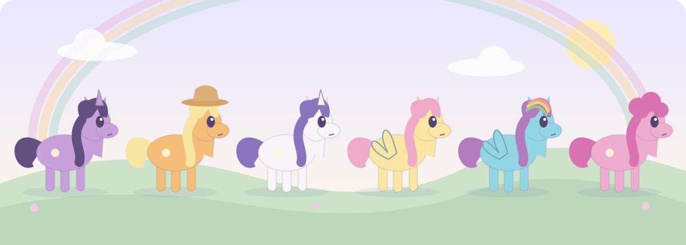

MY LITTLE PONY · A NEW STORY FOR EMILY
The Lost
Friendship Star
Six pony friends. Twelve little challenges. One sparkling adventure.

PONYVILLE NEEDS YOUR LITTLE SPARK OF MAGICDEAR EMILY…A little mystery.
A little mystery.
A whole lot of friendship.
The Friendship Festival is almost here, but its magical star has lost its sparkle!
Join Twilight and her friends. Read clues, solve puzzles and collect six friendship gems to bring the magic back.
No timer. Take a little break whenever you like.YOUR JOURNEY THROUGH PONYVILLE
A gem from every friend
THE MAGIC WAS FRIENDSHIP ALL ALONG
You made the star shine, Emily!
Reading, counting, thinking and kindness—you helped every pony.
★★★★★
Back to my adventures →Your adventure waits for you here.